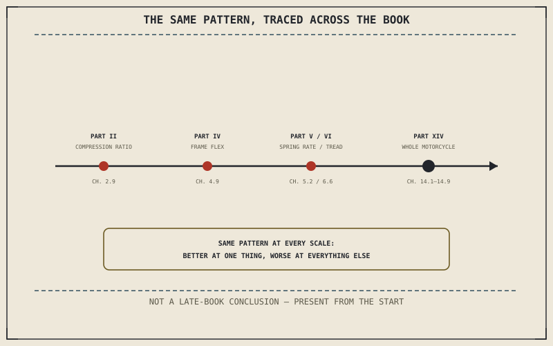

A single pattern has been running underneath this entire book, present as early as Part II and never once absent since: nearly everything explained in these chapters is a trade, not a flaw. A stiffer spring, a shorter trail, a bigger engine — none of them are simply better in some universal sense. Each one is better only relative to a specific problem, and worse relative to every problem it wasn't chosen to solve.
Chapter 15.5 closed Part XV by naming this exact argument as the book's closing case. This chapter opens Part XVI by tracing it back to where it actually began.
The Pattern, Traced From the Beginning
Chapter 2.9 showed compression ratio as a number chosen for a specific fuel and use case, not maximized freely. Chapter 4.9 went further, showing a frame that flexes on purpose isn't failing at its structural job — in some respects, it's doing that job better than a perfectly rigid one would. Chapter 5.2 showed neither a stiff nor a soft spring simply "working better" in isolation, only better against a specific kind of bump at a specific kind of cost. Chapter 6.6 showed tread grooves as rubber deliberately removed from the contact patch, trading dry grip for wet-weather survival. Part XIV then spent nine chapters showing the same pattern at the scale of an entire motorcycle. None of this was a late-book turn — it was there from the first time this book had to explain why an engineer chose one number over another.
Why "Better" Is Always a Question, Never an Answer on Its Own
Chapter 14.9 closed Part XIV by insisting "which motorcycle is best" only becomes answerable once it's tied to a specific rider's actual problem. That same logic applies at every smaller scale this book has covered — a stiffer spring isn't better, it's better for a heavier rider or harder riding; a shorter trail isn't better, it's better for a rider chasing cornering response at the cost of hands-off stability. "Better" was never a standalone answer anywhere in this book. It was always shorthand for "better at solving this specific problem," and dropping that second half is where most confusion about motorcycle engineering actually starts.
Nothing in this book was ever simply better. Every choice this book has explained — a spring rate, a trail figure, an entire category of motorcycle — was better at one specific thing and worse at everything else, and that isn't a compromise to apologize for. It's what engineering actually is.

A timeline of trade-offs traced across the whole book, from compression ratio in Part II through frame flex and spring rate in Part IV and V, tyre tread in Part VI, and full motorcycle categories in Part XIV, all following the same underlying pattern.
A Common Misconception, Cleared Up Early
It's a common assumption that engineering progress means eventually eliminating trade-offs entirely — a future, perfect component with no real downside at all. Chapter 14.8's electric motorcycle already demonstrated the honest alternative directly: a new technology doesn't escape trade-offs, it trades a familiar set for a genuinely different one, a shrinking fuel tank's mass for a battery's constant one. Progress changes which trade-offs exist. It has never once, anywhere in this book, made them disappear.
Where This Leads
Chapter 16.2 turns this argument into a practical tool: reading a spec sheet not as a scorecard to maximize, but as a map of the specific compromises a given motorcycle has actually made.
Key Concepts to Remember
- The trade-off pattern this book closes on was present from Part II onward, not a conclusion invented late in the book.
- "Better" is never a standalone answer — it's always shorthand for "better at solving a specific problem," at every scale this book has covered.
- New technology changes which trade-offs exist; it has never eliminated the existence of trade-offs themselves.
Cross-References
| ← Ch. 4.9 | Established a flexing frame as deliberately, not accidentally, doing its job well; this chapter treats that example as an early instance of the book's whole closing pattern. |
| ← Ch. 14.9 | Established that "which motorcycle is best" needs a specific problem to be answerable; this chapter extends that same logic to every smaller-scale choice in the book. |
| ← Ch. 14.8 | Established an electric powertrain as trading one set of problems for another rather than escaping trade-offs; this chapter treats that as proof progress doesn't eliminate trade-offs. |
| → Ch. 16.2 | Covers reading a spec sheet as a map of compromises. |